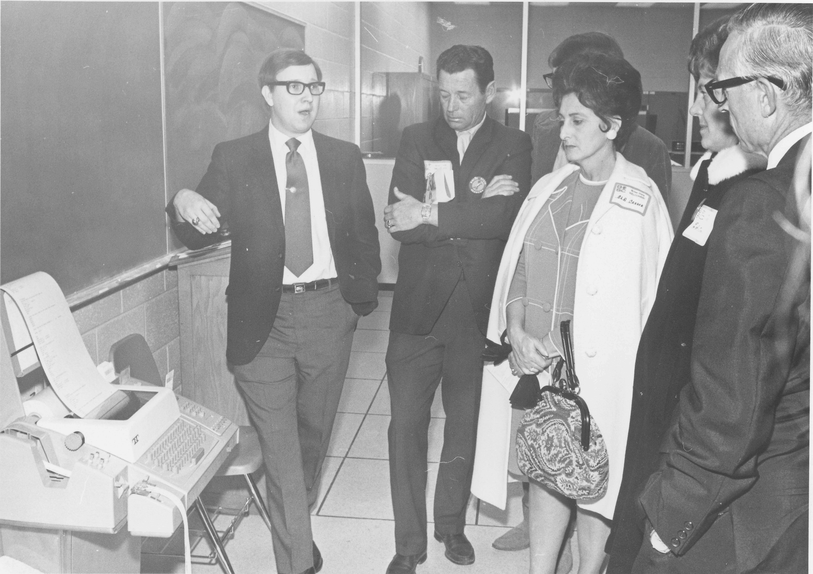

The first computer terminal on campus
The terminal was displayed
in 1970 during the School of Business building dedication ceremony.
It was attached via a telephone line to the State of Idaho's centralized data center that
was using a Univac 494 that had been installed by the state in 1969.
It was used by students to run programs in the BASIC programming
language.